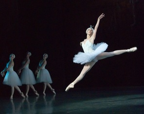

Cetvrti cin


Obala Labuđeg jezera - počinje bura. Uznemireni labudovi očekuju dolazak svoje kraljice Oddete. Ona se pojavljuje i veoma tužna priča prijateljicama o izdaji Siegfrieda. Princ dojuri izbezumljen, i moli Oddete za oproštaj, kune se da želi umrijeti zajedno s njom. Tad dolazi zli Rothbart i bori se sa princom. U isti mah se počinje bura na jezeru, pa udar groma ubija Rothbarta. Polako se sve stišava, čarobnjaštva isčezavaju, a zora obasjava dvoje zaljubljenih koji sretno koračaju u novi život.